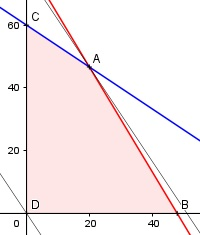

Aufgabe 84 Eine Fabrik stellt zwei unterschiedliche Bauteile in 2 getrennten Werken her. Für Bauteil A sind in Werk 1 5 Arbeitstakte und anschließend in Werk 2 noch 2 Arbeitstakte nötig. Bauteil B benötigt 3 Arbeitstakte in Werk 1 wie in Werk 2. Werk 1 hat eine maximale Kapazität von 240 Arbeitstakten Werk 2 eine von 180. Jedes Bauteil A liefert einen Gewinn von 240 €, B einen von 160 €. Bei welchen Stückzahlen ist der Gewinn G am größten? x = Bauteil A y = Bauteil B Bedingungen: 5x + 3y ≤ 240 3x + 3y ≤ 180 x ≥ 0 x ∈ ℕ y ≥ 0 y ∈ ℕ Zielfunktion: G = 240x + 180y G = 0 gewählt 0 = 240x + 180y |-240x -240x = 180y |:180 y = - 1,5x Randgerade 1: 5x + 3y = 240 Randgerade 2: 3x + 3y = 180

Die Eckpunkte A, B, C, D bilden das Planungs- gebiet, das alle Ungleichungen erfüllt. Eckpunkt A ist der Schnittpunkt der Randgeraden 1 und 2 5x + 3y = 240 (1) 2x + 3y = 180 (2) (1) + (2) * (-1) 5x + 3y = 240 -2x - 3y = -180 ------------------- 3x = 60 |:2 x = 20 Eingesetzt in (1): 5 * 20 + 3y = 240 |-100 3y = 140 |:3 2 y = 46--- ∉ ℕ 3 2 A hat die Koordinaten (20|46---) 3 Die Parallele der Zielfunktion liegt in A am höchsten --> Mögliche ganzzahlige Kombinationen in der Nähe von A: (20|46) liegt im Planungsbereich oder (21|45) liegt auf der Randgerade 1. (20|46) liefert Gmax = 240 * 20 + 160 * 46 = 12 160 € (21|45) liefert Gmax = 240 * 21 + 160 * 45 = 12 240 € bei einer Stückzahl von 21 Bauteilen A und 45 Bauteilen B.